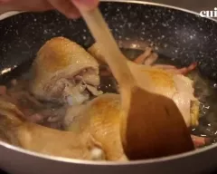

Cette technique culinaire permet en effet de récupérer les sucs de cuisson pour réaliser un jus gourmand. Vous ne savez pas comment vous y prendre ? Suivez nos astuces pour déglacer dans les règles de l’art !
Le principe du déglaçage ? Verser un liquide dans une poêle encore chaude ayant servi à la cuisson d’une viande, d’un poisson ou de crustacés. Au contact de la poêle chaude, l’eau froide (ou le vin) va entraîner un choc thermique. Grâce à elle, les sucs agglutinés au fond du récipient se décollent. En se mélangeant au liquide, ils créent un jus uniforme riche en goûts, à consommer tel quel ou à incorporer à un fond pour une sauce plus conséquente !